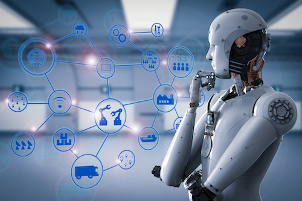
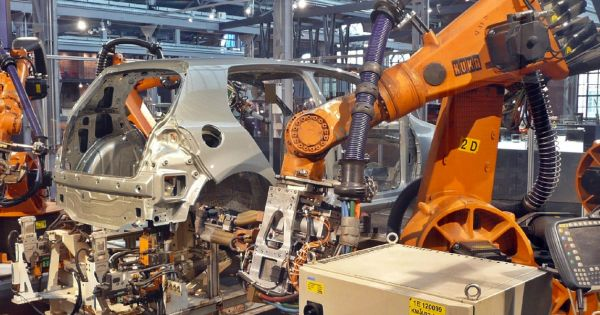

Blog One: Welcome and automation!
Hello and welcome to my blog for my Human Machine System Design class! So far in class, we learned a little about Human-Machine Systems and what this class about. And then we had a discussion on automation and its impacts.

Each day, automated systems are becoming more and more integrated with our lives in one form or another. From the simple watch to to washing machines to automated robots that can work in factories, we are constantly being surrounded by automation, and this is only increasing. On one hand, through automation we are becoming a more technologically advanced society and we are becoming more efficient, but on another hand, automation is changing our world rapidly, as it is putting jobs at risk and replacing people at a faster rate than ever. Another lingering question is, can we trust robots and machines? Our society is approaching an era where we will be completely reliant on robots and machines for our livelihood and for life saving technologies. I think that there are some potentially harmful repercussions to this, as many people have somewhat malicious intents, and can abuse their skills to cause harm to others. Also, if we are too dependent on technology and automation and there is some sort of natural disaster, it may put many lives in risk. With that being said, I think that it is important to design new technologies and products with this in mind, and creating products that are adaptable or have features that would allow humans to manually use a product.

I do believe though, that at the end of the day, a society with more automation is a better society. Many people are concerned that automation is taking over people's jobs and replacing them, and as this is happening, new jobs are also being created to create these technologies. Jobs have been replaced by automation since the beginning of mankind, however it was just not as obvious before as these automations did not have arms and other human-like features.
I thought this article was really interesting on automation and its affects in Human Resources departments! Also, here are 8 jobs that might be replaced by robots in the near future!